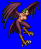
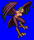
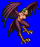
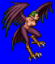

Height: Approximately 1.5 meters Weight: 100-150 lbs.
Habitat: Islands Origin: Greece
Meaning: From the greek "Harpezain" meaning "to snatch"
An evil bird that has the face of a woman and the body of a bird. In ancient Greek myth, harpies were imagined as enchanting winged goddesses, but in the middle ages, they, they became known as demons that steal food and kidnap weakened soldiers from raging battles. Today, the term "harpy" refers to a churlish woman.